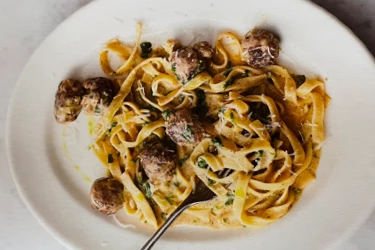

Easy Sausage Carbonara
- 15 minutes
- Serves 2
meal
- Taglietelle200g
- Sausages4
- Flat-leaf parsley15g
- Large egg1
- Paremesan cheese30g
- Cook the pasta in a pan of boiling salted water according to the packet, then drain, reserving a mugful of cooking water.
- Meanwhile, squeeze the sausagemeat out of the skins, then, with wet hands, quickly shape into 18 even sized balls.
- Roll and coat them in black pepper, then cook in a non-stick frying pan on a medium heat with 1/2 a tbsp of olive oil until golden and cooked through, tossing regularly, then turn the heat off.
- Finely chop the parsely, stalks and all, beat it with the egg and a splash of pasta cooking water, then finely grate and mix in most of the Parmesan.
- Toss the drained pasta into the sausage pan, pour in the egg mixture, and toss for 1 minute off the heat (the egg will gently cook in the residual heat).
- Loosen with a good splash of reserved cooking water, season to perfection with sea salt and pepper and finely grate over the remaining Parmesan.